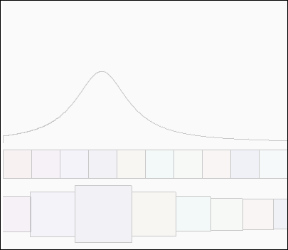

Fish Eye - like on the apple iMac

The equation used for the amplitude is:
float getY(float x)
{
float decay = 0.0005f;
return (1f / (1f + decay * x * x));
}
When x (i.e. the differece from the mouse to the icon) is zero, the amplitude is 1.
When x is large it tends to 0
The line is actually newY -= ampl * getY(mouseX - i);
which is the amplitude but exponentially amplified around zero
and reduced elsewhere - just to make the shape more obvious.
Step 1: Create the amplitude curve
Step 2: Size the icon boxes (while still in place)
Step 3: Move the icons so that they all fit (around the selected icon)
You don't have to move the selected icon to the top because all the other icons are moved out of the way anyway
icon.nw = icon.w * (map(getY(dx), 0, 1, 1, 2.5));
icon.ncx = offset + icon.nw / 2f;
Original Code
int offset = 20;
void myPrint(String s) { text(s, 10, offset); offset += 20; }
//............................................................
class Icon
{
float cx, cy, w;
float ncx, ncy, nw;
color clr;
Icon(float cx, cy, w)
{
this.cx = cx; this.ncx = cx;
this.cy = cy; this.ncy = cy;
this.w = w; this.nw = w;
clr = color((int) random(255), (int) random(255), (int) random(255), 10);
}
}
ArrayList icons = new ArrayList();
void setup()
{
size(400, 400, P2D); textFont(loadFont("arials"), 15); fill(190);
rectMode(CENTER);
ellipseMode(CENTER);
int c = 10;
float w = (float) width / (float) c;
for (int i = 0; i < c; i++)
{
float cx = (w/2f) + (w * i);
icons.add(new Icon(cx, height - height/4, w));
}
}
float getY(float x)
{
float decay = 0.0005f;
return (1f / (1f + decay * x * x));
}
void draw()
{
background(250);offset = 20;
stroke(200);
noFill();
float lastX = 0;
float lastY = height/2;
for (int i=0; i < width; i++)
{
float newX = i;
float newY = height/2;
float ampl = 100f;
newY -= ampl * getY(mouseX - i);
line(lastX, lastY, newX, newY);
lastX = newX;
lastY = newY;
}
for (int i = 0; i < icons.size(); i++)
{
Icon icon = (Icon) icons.get(i);
fill(icon.clr);
rect(icon.cx, icon.cy - 70, icon.w, icon.w);
}
float minDx = 10000f;
float selectedX = 0f;
float offset = 0;
for (int i = 0; i < icons.size(); i++)
{
Icon icon = (Icon) icons.get(i);
float dx = abs(mouseX - icon.cx);
icon.nw = icon.w * (1f + getY(dx));
icon.ncx = offset + icon.nw / 2f;
if (dx < minDx)
{
minDx = dx;
float r = ((float) mouseX - (icon.cx - (icon.w/2f))) / icon.w;
selectedX = icon.ncx - (icon.nw / 2f) + (icon.nw * r);
}
offset += icon.nw;
}
offset = selectedX - mouseX;
for (int i = 0; i < icons.size(); i++)
{
Icon icon = (Icon) icons.get(i);
fill(icon.clr);
rect(icon.ncx - offset, icon.ncy, icon.nw, icon.nw);
}
//fill(255, 0,0, 80);
//ellipse(selectedX, height/2, 10, 10);
/*
int c = 10;
float w = (float) width / (float) c;
float minDx = 10000f;
float selectedX = 0f;
float offset = 0;
for (int i = 0; i < c; i++)
{
float cx = (w/2f) + (w * i);
float dx = abs(mouseX - cx);
float newW = w * (1f + getY(dx));
float newCx = offset + newW / 2f;
rect(newCx, height/2,newW,newW);
if (dx < minDx)
{
minDx = dx;
float r = ((float) mouseX - (cx - (w/2f))) / w;
selectedX = newCx - (newW / 2f) +(newW * r);
}
offset += newW;
}
fill(255, 0,0, 80);
ellipse(selectedX, height/2, 10, 10);
*/
}